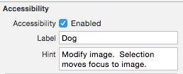
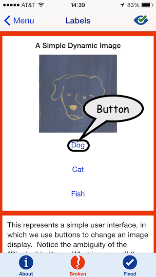
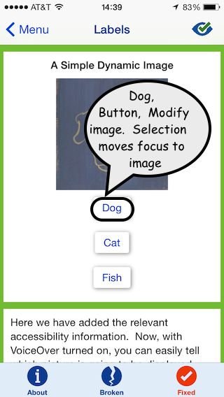

Accessibility Hints and Labels
Accessibility Labels are fundemental to iOS Accessibility, they are the bridge connecting the visual aspects of your application to voiceover. Accessibility Hints are similar to Labels, and can be implemented in the same way, however, hints contain more nuanced information than labels. From an accessibility standpoint, it is very important that these hints and labels are implemented properly. There are two ways we can accomplish this: Using the storyboard editor, and programatically
Implementing Accessibility Labels and Hints
Storyboard Editor
The first and simplest way to add accessibility labels/hints to your application is to simply use the story board editor to add them to your elements. The steps for doing this are fairly simple.
- Go to your storyboard editor in XCode
- Click on the element you would like to add a label for
- Open the Identity Inspector in the right bar
- Scroll down to Accessibility and check the box that says "Enabled"
- Under the fields "Label" and "Hint", enter concise and useful information about your element
Below is what this looks like for the Dog button in the Labels Section of the Deque U app.


Programmatic approach
Sometimes setting the accessibility label/hint in the Storyboard Editor doesn't quite cut it. For instance, the properties of the element might change when the app is running or when the user performs an action. In this case, you will want to set the accessibility descriptions programatically. This can be done easily with just a few lines of code.
- In the Storyboard Editor, turn on accessibility for the item that you want to set a label or hint for, just like in the first part of this demo
- Pull up the header file for your View Controller in the Assistant Editor
- Ctrl click and drag from your element to the header file to create an IBOutlet for your element
- Now open your implementation file for your ViewController
- Use the
accessibilityLabel/accessibilityHint member OR the setAccessibilityLabel/setAccessibilityHint function to add the appropriate string values.
Below are the two ways to set an accessibility Label.
_DogDisplay.accessibilityLabel = @"Displays a Dog";
[_DogDisplay setAccessibilityLabel:@"Displays a Dog"];
An Accessibility Hint can be set the same way, just replace "Label" with "Hint".
Discussion
Why is this important?
Without Accessibility Labels and Hints, unsighted users would be left in the dark about what things on your page actually are. For example, in our broken version of the Labels example in the Deque University for iOS app, there is a button with the visual label "Dog". However, when the button is highlighted in voiceover, it is simply read out as "button". This is the equivalent of replacing the visual labels on every button with "button", and expecting sighted users to be able to tell what the button does. As you can probably guess, that would be very difficult.

In the broken version of our Hints example in the iOS app, we run into a similar problems. Here, the play buttons for our music player don't have accessibility Hints, thus, when they are read out by VoiceOver, the button for visiting a webpage about the Star Spangled Banner is just "Star Spangled Banner". To an unsighted user, this could be anything, they may think that this button will play the song. In any case, it is unclear what this button does when it has no hint.

To fix these issues, we just have to add labels and hints for these elements. The button that displays the dog now reads out as "Dog, button (pause) Modify image. Selection moves focus to image". The button that plays music in the fixed version of Hints now becomes "Star Spangled Banner (pause) Plays music", to indicate that this button will play the star spangled banner when pressed.
Tips
- Make sure your labels are concise! if the label is more than one or two words, the additional information should probably go in a hint.
- If the content on the page is dynamic, make sure that your labels change when elements on the page are altered
These two fixes are possibly the easiest and quickest ways to improve accessibility in iOS Applications, but they are only a part of a bigger story. Check out our other blog posts and our Deque University for iOS app for more Accessibility tutorials!